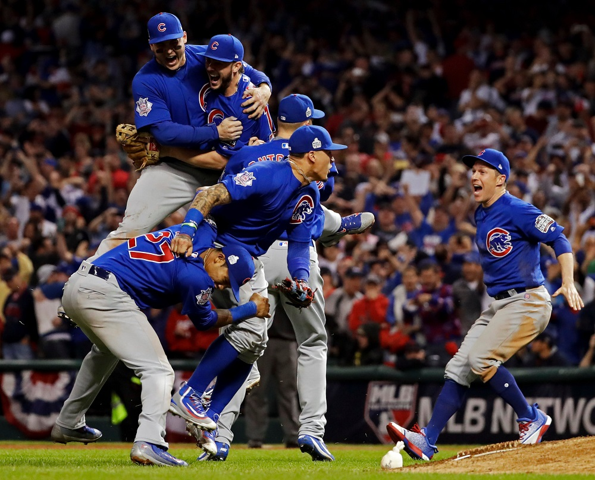
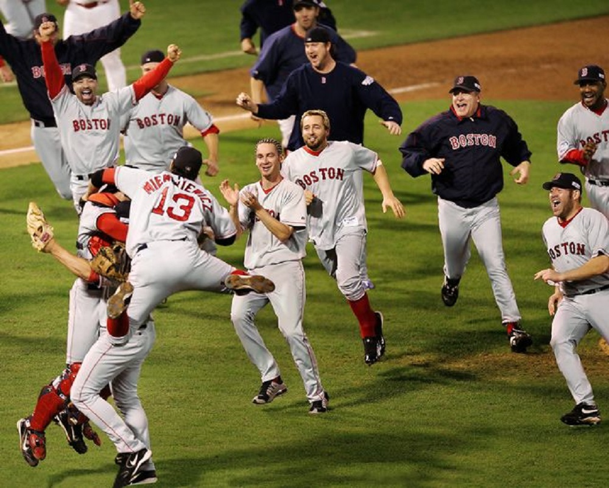

Greatest Moments in Baseball History
Since the turn of the century baseball has seen some of the greatest games, achievenments, and plays in the world of sports. From the Diamondback stopping the Yankees 4-peat, to Barry Bonds breaking Hank Aaron's home run record, to David Freese Walk-off home run in 2011.
#1
Cubs Break the Curse of the Billy Goat
In order to understand the importance of this moment one must understand the curse of the Billy Goat.

#2
Red Sox Break the Curse of the Bambino
After an 86 title drought for the Boston Red Sox they finally broke the curse of the Bambino.

#3
David Freese last game Heroics
Down 7-5 in the bottom of the 9th inning down to their last strike in their season, the Cardinals needed a hero to step up, David Freese answered the call with two of the most unbelieveable hits in baseball history.
#4
Jose Bautista's Bat Flip
Game 5 of the ALDS after a controversial call that went agaisnt the Blue Jay's the inning before the crowd was looking for somethign to cheer for. Jose Bautista gave them that and much more.

#5
D-Backs stop the Yankees 4-peat
Trailing in the 9th inning against the Yankees during the 21st century usually ment two things. One, you will have to face the greatest closer of all time, Mariano Riveria, and two, you were probably going to lose.